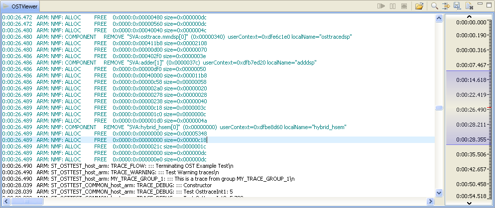
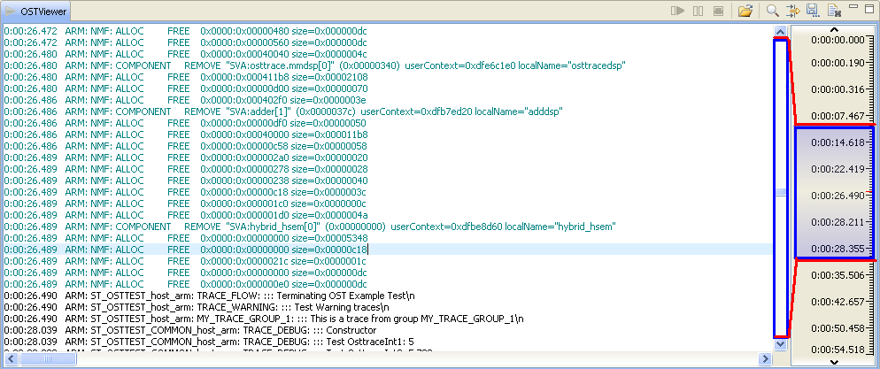

Trace Viewer Workbench
Documentation > References > Trace Viewer View
|
|
Trace Viewer Workbench Documentation > References > Trace Viewer View |
Description
This is the main view of Trace Viewer Workbench. It is used to display the decoded trace frames sent by the decoder executable. It also provides some useful features such as managing decoder options, search/filter text in the trace frames, link to source, color highlighting.

Scroll Pane
In order to manage large traces, a scroll pane is displayed to the right when there is a sufficient number of lines (20.000) in the Trace Viewer view. The content of text view at the left (including all the scrolling area) is represented by the blue area in the scroll pane. The middle of this area is represented by a red mark.

You can set the position of the text view in many ways:
Slide the text view scrollbar as usual to navigate in the currently displayed area.
Drag the blue area in the scroll pane to select a different area.
Double-click on the scroll pane ruler to select a different area.
Use the top/botton arrow of the scroll pane to go to the previous/next area in time.
Toolbar
| Icon | Name | Description |
 / / |
View icon | Highlighted when the view is active (e.g. collecting data). |
 / / |
Pause/Resume button | Pause the live display at Trace Viewer level. Decoder will still collect/decode the data but they will only be stored and not displayed. However the view is refreshed with the collected data the time the pause buton was pressed. This allows you to browse the yet parsed trace in the Trace Viewer withouth being annoyed by scrolling moves. Click the "Resume" button to resume the live display in Trace Viewer. Note that the data collected during the pause are kept in memory. It replaces the deprecated "Scroll Lock" functionality. Once in pause or when the parsing is finished, if your trace is too large, a rule is displayed at the right of the view and enables scrolling in the full trace (the text view contains only the equivalent of the thumb of this scroll widget) |
 / / |
Terminate button | Use it to send a terminate command to the decoder process. The icon is highlighted when the decoder process is active (e.g. collecting data). If the terminate command is taking too much time a dialog box appears. Click "Cancel" to force the kill of the decoder process, but in that case the decoder won't terminate properly (no stats displayed, output files may not be fully flushed) |
 |
Search button | It opens a simple text dialog that allows you to search for text in this view. The search can be set to case sensitive and includes all the lines that contains the searched text. The results are displayed in the Details view. Note that this action is only enable in pause or when the parsing is terminated. |
 |
Filter button | It opens a simple text dialog that allows you to filter the text in this view. The filter can be set to case sensitive and includes all the lines that contains the filter text. When filtering is activated, the search results will be affected by the filtering too. |
 |
Open Trace Stram button | Start decoding your trace file. It opens a dialog with options similar to decoder options to configure decoder and then it launches it. |
 |
"Save as" button | Save the content of this view in a text file. It opens a simple file dialog to choose the file to save the text to. |
| Clear button | Clears the view. |
Configuration
You can configure some display parameters for this view by opening the preferences window. Click on "Tools > Preferences..." to open the preferences panel. The preferences are applied at the beginning of a decoding session (e.g. will be applied the next time you will parse a trace).

Trace Viewer
Components format:
Select if the OST components will be formatted (using dictionaries names) or raw (trace ids).
Time format:
Select if the time will be formatted (HH:MM:SS.precision) or raw.
Time precision:
Select the precision for time display. You can choose between milliseconds, microseconds and nanoseconds.
Max. lines in Trace view:
When there are too much lines in the Trace Viewer text pane, a scroll pane is displayed in the right end of the view. This parameter sets the floor from which the pane is opened. Default is 20.000 lines, and it can be set from 1.000 to 100.000.
Max. lines in Console:
Limit the output of the console view. Unlimited output can slow Trace Viewer if there are countless lines in the console output (more than 50000).
Colors and Fonts:
Select the colors assigned to each trace type and the fonts used in the textual views.
Trace Server:
Options related to the TraceServer and STMProbe connection (see TraceServer Mode documentation page for more details).
Tips
Pause:
Pause data collection () to look at specific lines during the parsing. The right scroll pane appears if necessary to enable full-trace scrolling.
[OST Only] Open source file:
Double-click on a line to open the source file where it emitted this trace frame, if available in the provided dictionaries.
Get line details:
Select one or more lines in this view. You can see the details in the Details view. If nothing happens check that the  button is toggled on. A maximum of 1000 lines can be reviewed at a time in the Details view.
button is toggled on. A maximum of 1000 lines can be reviewed at a time in the Details view.
Search for specific lines:
Use the button to find particular decoded frames.

The parameters of the search are:
Note that each of these criterion can be inverted by clicking on the criterion name button.
The info box summarize the parameters of your search in human language.
The result is displayed in the Details view and is not limited in size. However, if the result oversize 10.000 elements it will be paginated (see the Details view documentation for more information). To keep a search result in the details view toggle off the button.

Filter specific traces:
Use the button to filter particular decoded frames (this button is also present at the bottom of the Trace Viewer workbench).
The parameters of the filter dialog are the same as the search dialog. The main difference is that the filtering is directly applied to the views instead of being displayed in the Details view.
When filters are activated it also filters the results of the Search tool. Activating a filter is similar to hiding the filtered traces from the collected traces.
It can be disabled by applying an empty filter or by clicking on the "Deactivate Filtering" button at the bottom of the workbench.

|
|
© STMicroelectronics and others 2010, 2011, 2012. All rights reserved. |